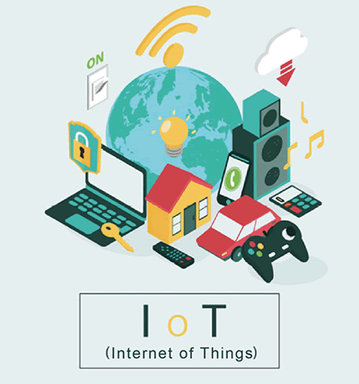
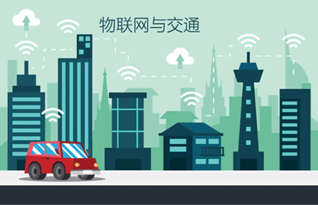

首页 > 编程笔记
物联网是什么？它的应用领域有哪些？
进入 21 世纪后，互联网越来越多地改变着人们的生活。从最初的收发邮件、文件传输和 Web 服务，到后来的社交、网络游戏和电子商务，再到如今的网络外卖、网络打车、视频直播等。互联网成了我们这一代人生活中不可或缺的部分。
在智能手机推出以后，移动互联网的发展更上台阶，各种各样的 App 给人们的生活带来了极大的便利。
近几年，我们经常听到一个跟互联网很接近的词——物联网，一字之差的两个词，它们之间有什么样的关系呢？
简单来讲，“物联网”就是物与物的互联网，是利用最新信息技术将物体互联互通在一起的新一代网络。
物联网的核心和基础仍然是互联网，是在互联网基础上延伸和扩展的网络。其用户端延伸和扩展到了物品与物品之间，可以进行信息交换和通信，也就是物物相联。
在互联网时代，接入互联网的设备是电脑、手机；而在物联网时代，几乎任何东西都可以接入物联网中，例如目前的部分空调、扫地机器人、冰箱已经接入物联网，未来会有更多设备接入物联网，如下图所示。
当你每天上学离开家时，家中的物联控制中心会关闭一些电器，比如电灯、空调、风扇等，防止因为忘了关闭电器而造成资源浪费，甚至引起不必要的事故。同时，物联安防系统将进入警戒状态，如果有外人入侵，这个系统就会报警，也会及时通知你和你的父母，甚至还可以通知小区保安和警察。
当你走进校园，校园的门禁系统会自动识别你的身份，会主动向你问好，同时也会通知你的父母你已经安全到达学校。如果你最先到达教室，可是发现教室的门还锁着，需要在门口等待老师开门吗？不，不需要！人脸识别技术会识别出你的身份，帮助你轻松打开教室门，开始一天的学习。
放学后，你可以在到家前打开家里空调；当你回到家时，家门会自动为你打开。空调在十分钟前就已经开始工作，而原来处于通风状态的门窗也随着空调的启动而自动关闭，室内刚好达到了你所喜欢的温度。此时，物联安防系统自动解除室内警戒，灯光自动亮起，背景音乐自动响起；冰箱会根据设置下单购买你需要的食物，为你配送到家；如果家里的甲醛、一氧化碳、二氧化碳等有毒有害气体超标，空调、新风系统会自动启动……
总之，物联网与你的生活紧密相关。
在未来的智能交通中，马路上的每一辆车都将成为交通网络中的一个节点。这些节点之间可以通信对话，并能借助大数据分析帮助司机更好地避开拥堵，节约时间，减少交通事故；也可以向交通部门提供准确的道路信息，为城市规划建设提供第一手资料；还可以把数据反馈给汽车生产商，供他们据此分析研究，进而设计出更先进舒适的汽车。
也许有一天，真的会如埃隆•马斯克所说的那样，“总有一天，法律将不允许人们自己开车”。人们只需要上车，告诉汽车目的地，就能静静等待到达目的地，如下图所示。
在未来的智慧农场里，人们将部署各种传感节点（用于获取环境温湿度、土壤水分、土壤肥力、二氧化碳、图像等信息），利用无线通信网络实现农业生产环境的智能感知、智能预警、智能决策、智能分析和专家在线指导，为农业生产提供精准化种植、可视化管理和智能化决策。
也许有一天，农民伯伯只需要坐在屋子里，看着电脑屏幕上的各种数据图表，就能做出精准的决策，合理浇水，精准施肥，大大提高农作物产量，如下图所示。
如果把物联网与医疗结合起来，就可以利用一些穿戴式智能设备完成一些基础项目（如心率、体温、血压等）的检测。智能穿戴设备会记录很多跟健康有关的数据，方便我们管理自己的健康记录。
你也可以选择将自己的健康数据传送给医院，以便让医生据此了解你的健康状况，必要时可以进行远程会诊，进而提出医疗意见，如下图所示。
在智能手机推出以后，移动互联网的发展更上台阶，各种各样的 App 给人们的生活带来了极大的便利。
近几年，我们经常听到一个跟互联网很接近的词——物联网，一字之差的两个词，它们之间有什么样的关系呢？
简单来讲，“物联网”就是物与物的互联网，是利用最新信息技术将物体互联互通在一起的新一代网络。
物联网的核心和基础仍然是互联网，是在互联网基础上延伸和扩展的网络。其用户端延伸和扩展到了物品与物品之间，可以进行信息交换和通信，也就是物物相联。
在互联网时代，接入互联网的设备是电脑、手机；而在物联网时代，几乎任何东西都可以接入物联网中，例如目前的部分空调、扫地机器人、冰箱已经接入物联网，未来会有更多设备接入物联网，如下图所示。

物联网改变生活
生活在互联网时代的人们，已经习惯通过网络浏览新闻、结交朋友、高效工作。那么，进入物联网时代，人们的生活又会是什么样子呢？当你每天上学离开家时，家中的物联控制中心会关闭一些电器，比如电灯、空调、风扇等，防止因为忘了关闭电器而造成资源浪费，甚至引起不必要的事故。同时，物联安防系统将进入警戒状态，如果有外人入侵，这个系统就会报警，也会及时通知你和你的父母，甚至还可以通知小区保安和警察。
当你走进校园，校园的门禁系统会自动识别你的身份，会主动向你问好，同时也会通知你的父母你已经安全到达学校。如果你最先到达教室，可是发现教室的门还锁着，需要在门口等待老师开门吗？不，不需要！人脸识别技术会识别出你的身份，帮助你轻松打开教室门，开始一天的学习。
放学后，你可以在到家前打开家里空调；当你回到家时，家门会自动为你打开。空调在十分钟前就已经开始工作，而原来处于通风状态的门窗也随着空调的启动而自动关闭，室内刚好达到了你所喜欢的温度。此时，物联安防系统自动解除室内警戒，灯光自动亮起，背景音乐自动响起；冰箱会根据设置下单购买你需要的食物，为你配送到家；如果家里的甲醛、一氧化碳、二氧化碳等有毒有害气体超标，空调、新风系统会自动启动……
总之，物联网与你的生活紧密相关。
物联网的应用领域
物联网技术在人们生活中的应用远远不止上面提到的几个例子。物联网的应用大致集中在智能家居、智能交通、智能农业、智能工业、智能物流、智能电力、智能医疗、智能安防等领域。1) 智能交通
近年来，得益于人工智能技术和物联网技术的发展，自动驾驶汽车技术越来越成熟。汽车上的众多传感器采集到的数据可以帮助司机更好地驾驶汽车，甚至可以帮助司机做出决策。在未来的智能交通中，马路上的每一辆车都将成为交通网络中的一个节点。这些节点之间可以通信对话，并能借助大数据分析帮助司机更好地避开拥堵，节约时间，减少交通事故；也可以向交通部门提供准确的道路信息，为城市规划建设提供第一手资料；还可以把数据反馈给汽车生产商，供他们据此分析研究，进而设计出更先进舒适的汽车。
也许有一天，真的会如埃隆•马斯克所说的那样，“总有一天，法律将不允许人们自己开车”。人们只需要上车，告诉汽车目的地，就能静静等待到达目的地，如下图所示。

2) 智能农业
“锄禾日当午，汗滴禾下土”是我们对农民伯伯辛苦劳作的一贯印象。当然，随着现代化技术的发展，农民伯伯也有了大量可以利用的机械化设备，这大大提高了生产效率。那么，将物联网技术应用于农业之后，会发生什么呢？在未来的智慧农场里，人们将部署各种传感节点（用于获取环境温湿度、土壤水分、土壤肥力、二氧化碳、图像等信息），利用无线通信网络实现农业生产环境的智能感知、智能预警、智能决策、智能分析和专家在线指导，为农业生产提供精准化种植、可视化管理和智能化决策。
也许有一天，农民伯伯只需要坐在屋子里，看着电脑屏幕上的各种数据图表，就能做出精准的决策，合理浇水，精准施肥，大大提高农作物产量，如下图所示。
3) 智慧医疗
当身体出现异常时，我们需要去医院做各种检查，然后医生会针对我们的病症开药或者给出治疗建议。如果把物联网与医疗结合起来，就可以利用一些穿戴式智能设备完成一些基础项目（如心率、体温、血压等）的检测。智能穿戴设备会记录很多跟健康有关的数据，方便我们管理自己的健康记录。
你也可以选择将自己的健康数据传送给医院，以便让医生据此了解你的健康状况，必要时可以进行远程会诊，进而提出医疗意见，如下图所示。
关注公众号「站长严长生」，在手机上阅读所有教程，随时随地都能学习。内含一款搜索神器，免费下载全网书籍和视频。

微信扫码关注公众号